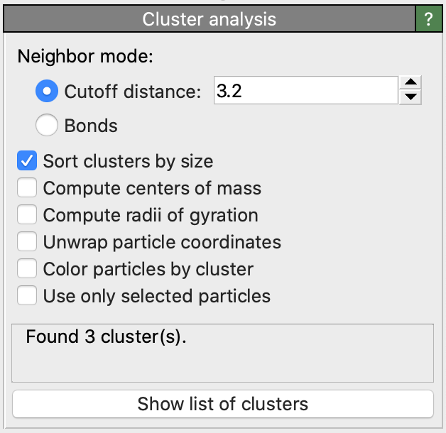

Cluster analysis
{kind=link}
This modifier decomposes the particles into disconnected groups (so-called clusters) based on the selected neighboring criterion. The neighboring criterion can be distance-based (cutoff range) or topology-based (bond network).
A cluster is defined as a set of connected particles, each of which is within the (indirect) reach of the other particles in the same cluster. Thus, any two particles from the same cluster are connected by a continuous path consisting of steps that fulfill the selected neighboring criterion. Conversely, two particles will belong to different clusters if there is no such continuous path connecting the two particles on the neighbor graph.
Input
Output
Connectivity criterion
You can choose between two clustering modes: In case of the distance-based mode, two particles are considered connected if they are within a specified proximity range of each other. In case of the bond-based mode, two particles are considered connected if there exists a bond between them. Note that particles not connected to any other particle will each form a single-particle cluster by itself.
Cluster numbering
The clusters identified by the modifier are given numeric identifiers ranging from 1 to N, the total number of clusters.
The algorithm assigns each input particle to one of these clusters and outputs this information as a new particle property named Cluster.
Note that the ordering of clusters is arbitrary by default and will generally depend on the storage order of the input particles.
You can, however, activate the option Sort clusters by size to request the sorting of cluster IDs by descending particle count.
This option guarantees that the first cluster (ID 1) will be the largest one in the system, i.e. the one containing the most particles.
Calculation of centers of mass
The modifier provides an option to compute the center of mass of each cluster. The center coordinates will be output as an additional column of the clusters table (see below). Finite clusters that are disrupted by periodic cell boundaries are handled correctly (using the minimum image convention if necessary). However, if a cluster is infinite in the sense that it reconnects to itself through a periodic cell boundary, then the computation results will be undefined.
The algorithm uses particle masses as weights when calculating the center of mass of a cluster.
The mass information will be taken from the Mass property of individual particles (if present) or
from the mass parameter of the particle types.
Note
If neither the Mass particle property is present nor mass values have been specified for at least some of the particle types,
then the algorithm uses uniform weights in the computation for all particles.
Calculation of gyration radius and gyration tensor
The modifier can optionally compute the radius of gyration of each cluster as well as its gyration tensor. Both quantities will appear as additional columns in the generated table of clusters.
The symmetric gyration tensor has six independent components: xx, yy, zz, xy, xz, yz (in simulation units of length squared).
The output data table is found in the data inspector panel:
{kind=link}
The calculation of the radius of gyration and the gyration tensor in OVITO follows the compute gyration command of the LAMMPS simulation code. It takes into account the individual particle masses (if present) or masses specified for the particle types.
Note
If neither the Mass particle property is present nor mass values have been specified for at least some of the particle types,
then the algorithm uses uniform weights in the computation for all particles.
Unwrapping of particle coordinates
The modifier provides the option to “unwrap” the coordinates of particles belonging to the same cluster, mapping them outside the primary image of the periodic simulation domain such that each cluster appears as a contiguous object.
Note that the unwrapping will yield meaningful results only for finite clusters. It will lead to undefined results for infinite clusters that are connected with themselves through a periodic cell boundary.
Coloring option
The modifier option Color particles by cluster gives each identified cluster a unique random color and colors the particles according to the clusters they belong to. It helps to quickly visualize the results of the clustering algorithm.
Restriction to selected particles
The option Use only selected particles restricts the clustering algorithm to the set of currently selected particles. Unselected particles will be treated as if they do not exist and will be assigned the special cluster ID 0.
Exporting computation results
- Total number of clusters
To export the total number of clusters found by the modifier to a text file (possibly as a function of time), use OVITO’s standard file export function. Select the output format Table of values and make sure that the
ClusterAnalysis.cluster_countglobal attribute is selected for export.- Size of the largest clusters
The modifier also outputs the global attribute
ClusterAnalysis.largest_sizeto report the number of particles in the largest cluster (only if the sort-by-size option is used). This information can be exported from OVITO in the same way as explained above.- Particle assignment to clusters
To export the list of particles belonging to each cluster to a text file, use OVITO’s file export function. Choose the output file format XYZ and mark the
Particle Identifierand theClusterproperties for export. This will yield a text file containing each particle’s cluster ID.- Cluster size list and centers of mass
The modifiers outputs the list of identified clusters as a data table, which consists of one row per cluster and columns for the cluster size (number of particles), center of mass and radius of gyration (if their calculation is enabled). You can open this table in the data inspector panel of OVITO by pressing the button Show list of clusters. The data inspector panel provides a function for exporting the table data to a text file.
- Cluster size distribution
Since the cluster table generated by the modifier contains each cluster’s size, you can subsequently apply OVITO’s Histogram to the
Cluster Sizecolumn of that table to calculate the cluster size distribution.
See also
ovito.modifiers.ClusterAnalysisModifier (Python API)